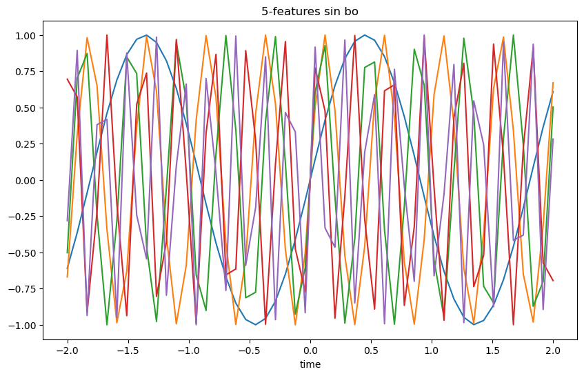
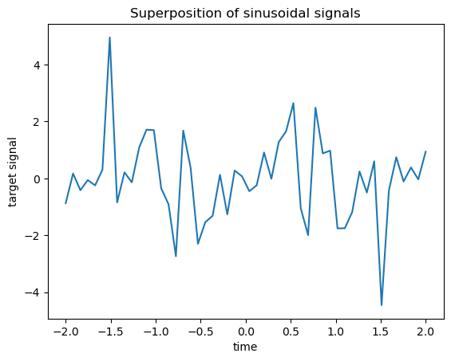
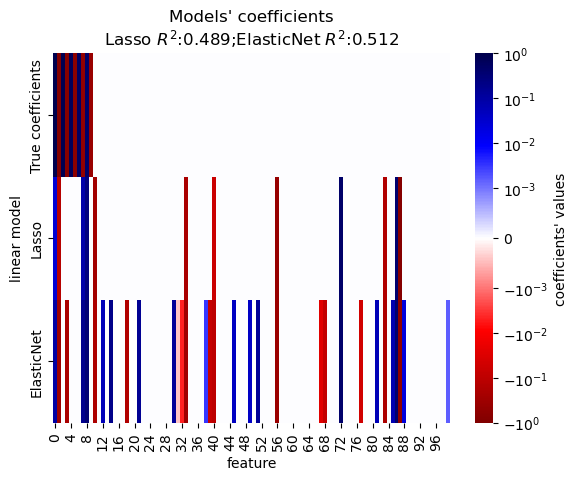

L1-based models for Sparse Signals#
This present three L1-based reg. models( Lasso, ARD, Elas..) on a synthetic signal. Signal is obtained from sparse and cor. features that are corrupted with noise.(signal rebuild)
Generate synthetic dataset#
dataset: n_samples < n_features, So it is a undertermined system. It have infinite solution, so we can’t apply an Ordinary Least Squares, Regularization will introduce a penelty term to limit coefficients.
make sparse matrix
import numpy as np
rng = np.random.RandomState(42)
n_samples,n_features, n_informative = 50,100,10
time_step=np.linspace(-2,2,n_samples)
freqs = 2*np.pi*np.sort(rng.rand(n_features))/0.01
X=np.zeros((n_samples, n_features))
for i in range(n_features):
X[:, i]=np.sin(freqs[i]*time_step)
#
idx = np.arange(n_features)
true_coef = (-1)**idx*np.exp(-idx/10) # 符号交替的，系数逐渐变小
true_coef[n_informative:] =0 # sparsify coef
y=np.dot(X,true_coef)
print(true_coef)
---------------------------------------------------------------------------
ModuleNotFoundError Traceback (most recent call last)
Cell In[1], line 1
----> 1 import numpy as np
2 rng = np.random.RandomState(42)
3 n_samples,n_features, n_informative = 50,100,10
ModuleNotFoundError: No module named 'numpy'
import matplotlib.pyplot as plt
# 可视化前几个特征
plt.figure(figsize=(10, 6))
for i in range(5): # 只绘制前5个特征
plt.plot(time_step, X[:, i], label=f'Feature {i+1}, Freq={freqs[i]:.2f}')
plt.xlabel('time')
plt.title('5-features sin bo')
Text(0.5, 1.0, '5-features sin bo')

introduce some random and gaus. noise. to features and target
for i in range(n_features):
X[:, i] = np.sin(freqs[i] * time_step + 2*(rng.random_sample() - 0.5))
X[:, i]+= 0.2*rng.normal(0,1,n_samples)
y += 0.2*rng.normal(0,1,n_samples)
50行50样本对应50个时间点，X一列即为50个时间下的一特征正弦波值，y为信号
import matplotlib.pyplot as plt
plt.plot(time_step,y)
plt.ylabel("target signal")
plt.xlabel("time")
_ = plt.title("Superposition of sinusoidal signals")

We split the data into train and test sets for simplicity. In practice one should use a TimeSeriesSplit cross-validation to estimate the variance of the test score.
Here we set shuffle=”False” as we must not use training data that succeed the testing data when dealing with data that have a temporal relationship.
from sklearn.model_selection import train_test_split
X_train,X_test,y_train,y_test = train_test_split(X, y, test_size=0.5, shuffle=False)
print(X_train.shape)
print(y_train.shape)
(25, 100)
(25,)
In the following, we compute the performance of three l1-based models in terms of the goodness of fit $R^2$score and the fitting time.
Then we make a plot to compare the sparsity of the estimated coefficients with respect to the ground-truth coefficients and finally we analyze the previous results.
LASSO#
from time import time
from sklearn.linear_model import Lasso
from sklearn.metrics import r2_score
t0 = time()
lasso = Lasso(alpha=0.14).fit(X_train, y_train)
print(f"Lasso fit done in {time() - t0:.3f}s")
y_pred_lasso=lasso.predict(X_test)
r2_score_lasso = r2_score(y_test,y_pred_lasso)
print(f"Lasso R^2 score on test data : {r2_score_lasso:.3f}")
Lasso fit done in 0.002s
Lasso R^2 score on test data : 0.489
ElasticNet#
ElasticNet is a middle ground between Lasso and Ridge,
from sklearn.linear_model import ElasticNet
t0 = time()
enet = ElasticNet(alpha=0.08, l1_ratio=0.5).fit(X_train, y_train)
print(f"ElasticNet fit done in {(time() - t0):.3f}s")
y_pred_enet = enet.predict(X_test)
r2_score_enet = r2_score(y_test, y_pred_enet)
print(f"ElasticNet r^2 on test data : {r2_score_enet:.3f}")
ElasticNet fit done in 0.002s
ElasticNet r^2 on test data : 0.512
Plot and analysis of the results#
print(X_train.shape, true_coef.shape,y_train.shape)
(25, 100) (100,) (25,)
import pandas as pd
import matplotlib.pyplot as plt
import seaborn as sns
df = pd.DataFrame(
{
'True coefficients': true_coef,
'Lasso':lasso.coef_,
'ElasticNet':enet.coef_,
}
)
df.head()
| True coefficients | Lasso | ElasticNet | |
|---|---|---|---|
| 0 | 1.000000 | 0.027951 | 0.095145 |
| 1 | -0.904837 | -0.135309 | -0.331096 |
| 2 | 0.818731 | 0.000000 | 0.000000 |
| 3 | -0.740818 | -0.000000 | -0.210996 |
| 4 | 0.670320 | 0.000000 | -0.000000 |
from matplotlib.colors import SymLogNorm
ax = sns.heatmap(
df.T,
# 增强可视化效果， 大小值区分更加明显
norm=SymLogNorm(linthresh=10e-4, vmin=-1, vmax=1),
cbar_kws={"label": "coefficients' values"},
cmap="seismic_r",
)
plt.xlabel('feature')
plt.ylabel("linear model")
plt.title(
f"Models' coefficients\n"
f"Lasso $R^2$:{r2_score_lasso:.3f};"
f"ElasticNet $R^2$:{r2_score_enet:.3f}"
)
Text(0.5, 1.0, "Models' coefficients\nLasso $R^2$:0.489;ElasticNet $R^2$:0.512")

📊 对于高度相关的特征数据。
ElasticNet 相比Lasso ，稀疏的更少，更加L2. 效果更好